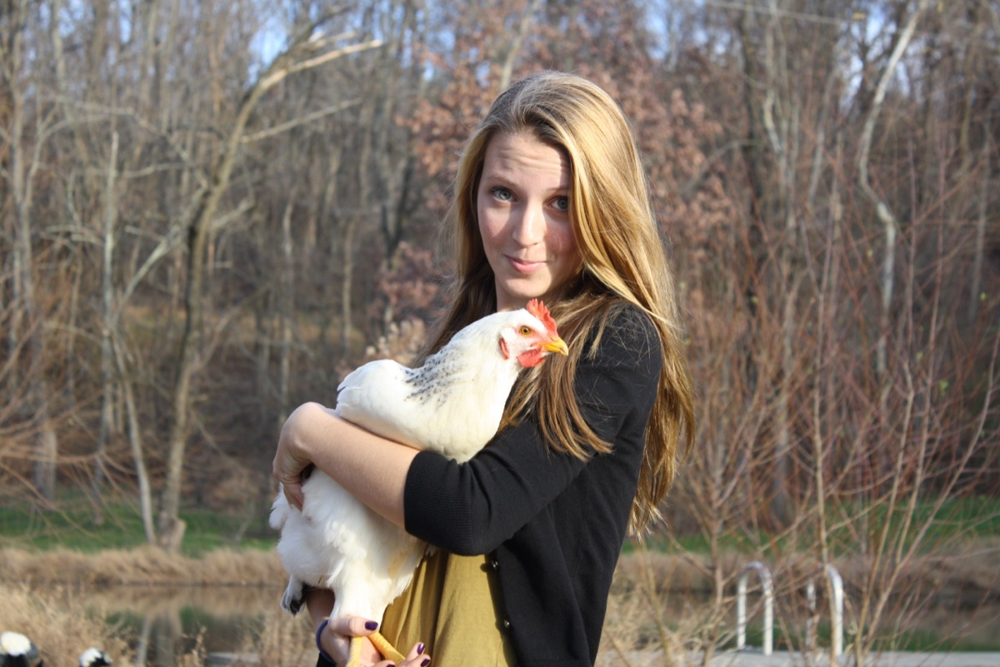

Elizabeth Finley Broaddus · 1996–2014
Eighteen years old, with plans to study environmental policy at William & Mary, Finley founded a fund to keep her vision moving forward.

Within about ten minutes of meeting me, people register two things: that I have green eyes, and that my greatest ambition is to do everything I can to protect the environment.
Elizabeth Finley Broaddus was a student at Highland School whose plans to attend the College of William and Mary to study environmental policy were interrupted by the news that she had a rare form of cancer.
As she battled the incurable disease, Finley set up Finley's Green Leap Forward on February 26, 2014 to "support local and global efforts that have a positive impact on the environment, moving us forward towards a healthy, sustainable planet." She saw a vision of a healthier planet with cleaner air and water — and she wanted to make sure something kept moving toward it after she was gone.
Finley's fight with cancer ended five months later, on June 2, 2014. She was eighteen.
For Finley's 18th birthday on Wednesday, March 12, 2014, friends and family set out to raise at least $18,000 for the fund. Donations surpassed $74,000 by her birthday and passed $100,000 by Earth Day. The fund received support from at least 37 states and from every continent except Antarctica.
In honor of Earth Day 2014, Finley selected her first two grantees: The Green Belt Movement in Nairobi, Kenya, and the Cacapon Institute in West Virginia — both focused on forest restoration and tree planting. She intentionally chose one local effort and one global one, and looked for projects that made a positive difference in the daily lives of people in the surrounding community.
My green eyes remind me of who I am and what I want to accomplish. Green means go; it is a call to action.
Finley moved friends and strangers alike to give back to the environment, not only through the Green Leap Forward Fund but through personal action. People around the world have planted trees in "Finley's Forest" and changed how they use and reuse resources at home and at work.
Today Finley's Green Leap Forward carries on Finley's vision by encouraging personal action and by using her guiding principles to select and award annual grants to both local and global efforts that move us toward global sustainability.
The foundation is led by Julie Broaddus, Finley's mother and the foundation's president. Finley's Green Leap Forward became a registered 501(c)3 nonprofit in 2024, after a decade growing the fund at the Northern Piedmont Community Foundation.